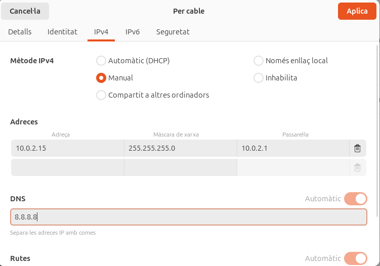

Sprint 3
instalacio LDAP
Al entrar en la maquina li posem una IP al servidor manualment

Canviem el hostname

I afegim el domini que utilitzarem seguit del hostname

Fem un update per a guardar tot

Començarem instal·lant els requisits per tindre el ldap

posem un contrasenya i seguidament la confirmem


per a crear lo que es la base del domini es pot fer a traves dels arxius base o a traves d’una comanda, nosaltres ho farem per comanda.

Ho farem tot manualment ja que volem configurar-ho al nostre gust.

Posarem el nom del nostre domini

El nom de l’organització

Confirmem amb la contrasenya que hem posat anteriorment


Assegurem que no tinguéssim res ja fet i així tindre totes les característiques noves


Fem un slapcat per confirmar tots els canvis,
com podem veure tenim canviat el nom del domini i l'organització.

2.gestio d’usuaris i grups i comandes
Creem una unitat organitzativa que es un contenidor dins del directori per guardar objectes com usuaris, grups etc…
la utilitzarem per poder guardar tots els usuaris que volem.

Creem un grup anomenat alumnes per a poder posar els usuaris creats dins del grup i posarem els usuaris que volem afegir a baix de tot.

Ara configurarem el fitxer de l’usuari per a poder utilitzar-lo en la maquina client definint els tipus d'objectes que es.

Aqui afegim els usuaris, grups, unitats organitzatives, etc…


Que volen dir aquest parametres?(-c -x -D -W -f)
la -c fa que el ldapadd continuï executant-se encara que es produeixin errors.
la -x utilitza autenticació simple en lloc de SASL (Simple Authentication and Security Layer).
la -D indica el Distinguished Name (DN) de l'usuari que realitza l'operació, en aquest cas, l'usuari administrador.
La -W demana la contrasenya de l'usuari especificat amb -D. Això és més segur que incloure la contrasenya directament a la comanda com passaria amb la -w.
Maquina client
fem un apt Update per començar a configurar la màquina client i tindre-ho tot al dia

fem un ping al servidor per veure si tenim conexió.

Aqui instal·larem el nscd que es un dimoni (programa en segon pla) que s’encarrega d’emmagatzemar el cache.

Seguidament instal·larem una llibreria per a poder fer la conexio al domini ldap des del client.

posem la IP del server per tindre conexio en ell

Ara posarem el nom del domini per a que es connecti

Utilitzarem la versió 3 del LDAP

Li donarem permisos al usuari root per a poder configurar el ldap

Marcarem que no fa falta fer login per a entrar a la base de dades del nostre ldap

posem la conta admin per al nostre root.

Posem la contrasenya

Instal·larem el libpam-ldap per poder iniciar en usuaris

Quan el client no es pugui validar al domini apart de comprovar els arxius de configuracio que veurem a continuacio tambe farem sempre un reconfigure:
dpkg-reconfigure ldap-auth-config


triem la forma de encriptar la contrasenya


entrarem al fitxer /etc/nsswitch.conf canviar-ho i deixar-ho igual que a la imatge següent.
Fitxer /etc/nsswitch.conf
Modifiquem la configuració de Name Service Switch (NSS) per incloure ldap abans d'altres mètodes de resolució (compat, files, systemd, sss).
Ara l'autenticació i la gestió d'usuaris es basarà primer en LDAP abans de consultar altres mecanismes locals.
Això permet que usuaris gestionats per LDAP puguin autenticar-se sense necessitat d'estar registrats localment a la màquina.

Entrem al fitxer /etc/pam.d/common-password i canviem el use_authtok
S'han afegit mòduls PAM per a pam_ldap.so i pam_unix.so, prioritzant l'autenticació mitjançant LDAP però mantenint altres mecanismes com a fallback.
L'autenticació de contrasenyes pot utilitzar LDAP.
Es poden establir regles específiques com use_authtok i try_first_pass, que permeten reutilitzar credencials introduïdes prèviament per a evitar haver d'introduir-les diverses vegades.


S'ha afegit pam_mkhomedir.so skel=/etc/skel umask=077, que assegura que es creï un directori d'inici (home) per als usuaris que s'autentiquen mitjançant LDAP.
Si un usuari LDAP inicia sessió per primer cop, el sistema crearà automàticament el seu directori /home/usuari amb permisos restringits (umask=077), evitant que altres usuaris puguin accedir als seus fitxers.
mirem la conexio que estigui correcta
Permet que es mostri l'opció d'inici de sessió manual a LightDM.
Facilita que usuaris LDAP (o altres comptes no definits localment) puguin iniciar sessió introduint el seu nom d'usuari i contrasenya.

comprovem que el usuari estigui be

Ens conectem i veiem que funciona.

I ja estariem dins del usuari